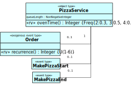
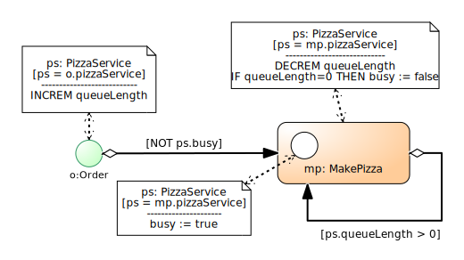

This tutorial is based on the Open Access book Business Process Modeling and Simulation with DPMN, available from https://sim4edu.com/reading/bpms-dpmn/
DPMN = Discrete Event Process Modeling Notation
... is a diagram language for making process models for Discrete Event Simulation (DES).
It combines the intuitive flowchart modeling style of BPMN (the Business Process Modeling Notation) with the rigorous semantics provided by
DPMN is a conservative extension of Event Graphs allowing to model Activity Networks
and Processing Networks
DPMN is the first visual modeling language that provides a conceptual integration of Event Graphs +
BPMN-style process models + GPSS/SIMAN/Arena-style process models
Key Insight #1
DES and BPM Should Learn from Each Other
Strengths of Discrete Event Simulation (DES): more general/advanced forms of resource modeling
Strengths of Business Process Modeling (BPM): declarative resource modeling and a standardized diagram language (BPMN)
DES should adopt BPMN-style Process Diagrams and declarative resource modeling from BPMN
BPMN should adopt the more general resource modeling features from DES
Key Insight #2
DES Tools Lack a Scientific Foundation
Arena
Simul8
AnyLogic
Entity
Work Item
Agent
Create
Start Point
Source
Process
Queue+Activity
Service or Seize+Delay+Release
Dispose
End Point
Sink
Proprietary terminologies and diagram languages
No common conceptual basis
No formal semantics
Key Insight #3
Event Graphs Are the Most Fundamental M&S Approach
Event Graphs (Schruben 1983) allow making process models in terms of events and the state changes and follow-up events triggered by them
They define an intuitive diagram language (with a formal/operational semantics) for Event-Based Simulation models
Other approaches should only be considered as DES, if they conservatively extend Event Graphs
Key Insight #4
Business Processes are not Petri Nets, but Event Graphs!
It has been an unfortunate choice in the history of BPM to view business process models as Petri Nets.
Petri Nets are an abstract low-level computational formalism without ontological foundations.
Mapping business process models to Petri Nets, instead of Event Graphs, for obtaining their semantics is like mapping
SQL queries to Assembler code instead of predicate logic formulas.
Key Insight #5
There Are Two Kinds of Business Processes
BPMN-style Activity Networks with a flow of events, where activity nodes have task queues.
GPSS/SIMAN/Arena-style Processing Networks with a flow of objects and events, where processing nodes have object and task queues.
Key Insight #6
Declarative versus Procedural Resource Modeling
In declarative resource modeling, you just state which resources are required by an activity, instead of explicitly modeling their (de-)allocation steps.
Declarative resource modeling: resource roles in BPMN/DPMN
is superior to
Procedural resource modeling: Seize-Delay-Release in DES
Part I: Event Graphs and Basic DPMN
Event Graphs (EGs)
... have been proposed for DES modeling by Schruben in 1983.
The integer variable L denotes the length of the input buffer. The Boolean variable B denotes the busy/available status of the "server".
Strengths and Weaknesses of EGs
Strengths:
EGs provide an intuitive visual modeling language: events cause state changes and follow-up events.
EGs capture/define the semantics of Event-Based Simulation with event scheduling.
Weaknesses:
EGs lack a visual notation for conditional and parallel branching.
EGs do not support objects with attributes (OO modeling).
EGs do not support activities.
Object Event Modeling and Simulation (OEM&S)
... extends Event-Based Simulation by adding objects, activities, and more. Formal semantics defined in Gerd Wagner: An Abstract State Machine Semantics For Discrete Event Simulation, Proc. of WSC 2017.

A DPMN process model is based on an underlying OE class model defining the types of its objects and events.
The Layers of DPMN (1)
Layer
Concepts
Diagrams
Event-Based Simulation
Event Graphs (Schruben 1983)
Events, Event Scheduling Arrows, Assignments
Object Event Simulation
Object Event Graphs (Basic DPMN)
+ Objects w/ State Changes
DPMN with Resource-Constrained Activities
Activities
Resource-Dependent Activity Scheduling Arrows
Resource Roles
Resource Multiplicity Constraints
Resource Pools
The Layers of DPMN (2)
Layer
Concepts
Diagrams
Object Event Simulation
Object Event Graphs (Basic DPMN)
+ Objects w/ State Changes
DPMN with Resource-Constrained Activities
Activities
Resource Roles
Resource Multiplicity Constraints
Resource Pools
Resource-Dependent Activity Scheduling Arrows
DPMN with Processing Activities
Processing Activities
Entry/Processing/Exit Nodes
Processing Flow Arrows
Part II: Modeling Activity Networks with DPMN
Introducing Activities as Paired Start/End Events
Resource-Dependent Activity Scheduling Arrows

The Make-and-Deliver-Pizza Model
A pizza service company takes phone orders
for making and delivering pizzas,
with the help of order takers, pizza makers, ovens and a crew of pizza delivery scooter drivers.